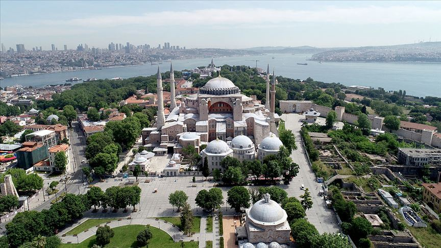

| ANASAYFA | İLETİŞİM | YAPIM | HAKKIMIZDA |
| AYASOFYA CAMİİ/İSTANBUL |
|  |
Ayasofya’nın Tarihi:
Ayasofya yapılmadan önce, aynı yerde yapılmış olan iki farklı kilise vardır. Bunlardan ilki Konstantin’in oğlu olan Konstantius tarafından 360 yılında yapılmış olan kilisedir. Bu kiliseye Megale Eklesia, yani, Büyük Kilise ismi verilir. İmparator Arkadius zamanında, M.S. 404 yılında çıkan isyanlar sırasında yanar. Arkadios’tan sonra tahta çıkan 2. Teodosius, yıkılan bu kilisenin yerine yeni bir kilise yaptırır. Bu ikinci kilise M.S. 532’ye kadar ayakta kalır.
M.S. 532 yılında İmparator Justinianus zamanında şehir halkı, huzursuzluk dolayısıyla büyük bir isyana başlar. Tarihte Nika Ayaklanması olarak geçen bu ayaklanma, neredeyse tüm şehrin büyük hasar görmesine neden olur. Justinianus bu isyanı bastırır, ancak şehrin yeniden kurması gerektiğini anlar. Bu Justinianus için bir fırsattır ve şehri yeniden inşa etmek için hazırlıklara başlar. Konstantin nasıl Yeni Roma’yı kurmak istediyse, Justinianus’un de buna benzer bir amacı vardır. Ancak bu sefer Yeni Roma yerine Yeni Yeruşalim’i, yani Yeni Kudüs’ü kurmayı amaçlar.
Bilindiği gibi Yeruşalim, yani Kudüs, bütün ilahi dinler için çok önemli ve kutsal bir şehirdi. Bunun en önemli nedeni de orada önce Süleyman tarafından yapılmış olan ve M.Ö. 6. yy’da yıkıldıktan sonra tekrar inşa edilen Kudüs Tapınağı’dır. Bu tapınak Tanrı’nın halkıyla buluştuğu yerdi. Dolayısıyla en kutsal yer olarak kabul ediliyordu. İşte Justinianus de Yeni Yeruşalim’in inşa ederken, bir yandan Yeni Tapınağı inşa etmek istiyordu. Dolayısıyla Ayasofya mimarisine bakarken, Kudüs’teki Süleyman Tapınağı mimarisi ışığında bakacağız.
Justinianus dönemin en önemli iki mimarını huzuruna çağırır ve planından bahseder. Bu mimarlar Trallesli Antemius ve Miletli İsidoros’tur. Antemius ve İsidorus plana bakarak bu binanın yapılmasının imkansız olduğu konusundaki görüşlerini belirtirler; ancak Justinianus kararlıdır. Bu kilisenin yapılması gerekmektedir. İnşaat 23 Şubat 532 tarihinde başlar ve kilise 27 Aralık 537 tarihinde ibadete açılır.
Ayasofya inşa edildiğinde, piramitler dışında dünya üzerindeki en büyük binaydı ve yaklaşık 1000 yıl boyunca böyle kaldı. Kubbesi 1000 yıl boyunca en geniş ve yüksek kubbe olarak kabul edildi.